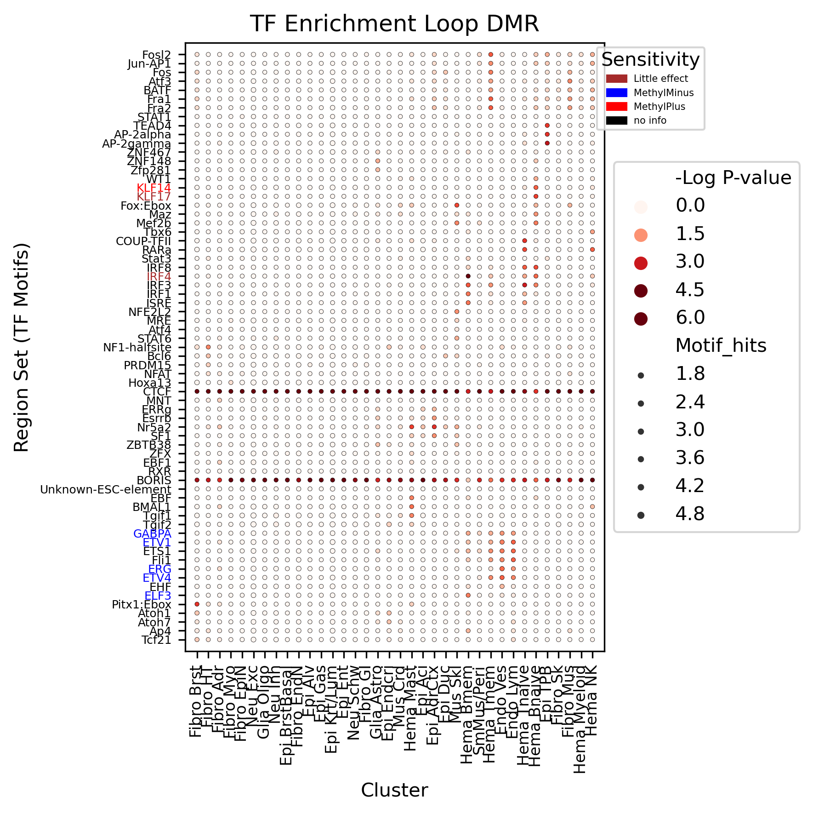

8. pycisTarget loop-DMR motif enrichment#
Part of the Fig. 5 chapter — produces the Fig 5H (major-type loop vs non-loop DMR motif dot plot) and Fig 6G (Mus Skl loop-DMR motif) panels via pycisTarget/SCENIC+. Outputs shown are the author’s original run.
📥 Required input files#
This notebook reads the following files (paths resolve from ENTEX_ROOT/REF_ROOT; the setup cell sets them). See the chapter’s inputs.md for RAW-vs-derived tags.
f'{ENTEX_ROOT}/L1color.tsv'· metadata: colorf'{REF_ROOT}/aertslab_motif_colleciton/v10nr_clust_public/snapshots/motifs-v10-nr.hgnc-m0.00001-o0.0.tbl'· reference'loop_peak_motif/majortype_merged_loop_TF_all.hdf'· loop callsf'{REF_ROOT}/yin_2017_motif_type.csv'· reference'loop_dmr_motif/pycistarget_majortype_merged_loopdmr_TF_all.hdf'· loop calls
# === Reproduction setup — edit ENTEX_ROOT / REF_ROOT for your machine ===
import os, sys
ENTEX_ROOT = os.environ.get('ENTEX_ROOT', '/large_storage/zhoulab/zhoujt/project/ENTEx')
REF_ROOT = os.environ.get('REF_ROOT', '/large_storage/zhoulab/ref')
BOOK_ROOT = os.environ.get('BOOK_ROOT', f'{ENTEX_ROOT}/analysis/HumanCellEpigenomeAtlas')
sys.path.insert(0, BOOK_ROOT)
os.chdir(f'{ENTEX_ROOT}/analysis')
import repro_guard
#pip install lxml html5lib beautifulsoup4
import pandas as pd
import seaborn as sns
from scipy.stats import zscore
import numpy as np
import matplotlib.pyplot as plt
import matplotlib as mpl
from glob import glob
from collections import defaultdict
mpl.style.use('default')
mpl.rcParams['pdf.fonttype'] = 42
mpl.rcParams['ps.fonttype'] = 42
# gene_meta = pd.read_csv('/anvil/scratch/x-maywu/project/ref/hg38/gencode-v30/gencode.v30.annotation.gene.flat.tsv.gz', sep='\t', header=0)
# gene_meta['gene_id_idx'] = gene_meta['gene_id'].str.split('.').str[0]
# ens2gene = gene_meta.set_index('gene_id_idx')['gene_name'].to_dict()
# gene2ens = gene_meta.set_index('gene_name')['gene_id_idx'].to_dict()
#tf2call['Call'].unique()
callmap = {'MethylPlus':'MethylPlus',
'MethylMinus':'MethylMinus',
'Little effect and MethylMinus':'Little effect',
'MethylMinus and MethylPlus':'Little effect',
'Little effect and MethylPlus':'Little effect',
'MethylPlus and Little effect':'Little effect',
'MethylMinus and Little effect':'Little effect',
'MethylPlus and MethylMinus':'MethylPlus',
'Little effect':'Little effect',
'inconclusive':'no info'}
L1_meta = pd.read_csv(f'{ENTEX_ROOT}/L1color.tsv', sep='\t', header=0, index_col=0)
# L1_meta = L1_meta.drop(['c35', 'c36'], axis=0)
L1_meta = L1_meta.drop(['c7'], axis=0)
# L1_annot = L1_meta['L1_abbr'].to_dict()
# L1_color = L1_meta['color'].to_dict()
majortype2annot = L1_meta['L1_abbr'].to_dict()
# Read with whitespace as the delimiter
meta = pd.read_csv(f'{REF_ROOT}/aertslab_motif_colleciton/v10nr_clust_public/snapshots/motifs-v10-nr.hgnc-m0.00001-o0.0.tbl', sep='\t',index_col=0)
meta = meta.reset_index()
meta.index = meta['#motif_id']
#id2genename = meta['gene_name'].to_dict()
id2genename = defaultdict(list)
for k,v in meta[['gene_name']].iterrows():
id2genename[k].append(v)
# Specify the path to your HTML file or a URL
col = ['Unnamed: 0', 'Region_set', 'NES', 'AUC', 'Rank_at_max',
'Motif_hits']
df = [pd.read_html(file_path)[0][col] for file_path in glob(f'{ENTEX_ROOT}/analysis/loop_peak_motif/*/*_ctx_results.html')]
df = pd.concat(df,axis=0)
#df.index = df['Unnamed: 0']
df['majortype'] = [i.split('_')[-1] for i in df['Region_set']]
df['group'] = [i.split('_')[0] for i in df['Region_set']]
df
| Unnamed: 0 | Region_set | NES | AUC | Rank_at_max | Motif_hits | majortype | group | |
|---|---|---|---|---|---|---|---|---|
| 0 | flyfactorsurvey__l_3_neo38_SANGER_2.5_FBgn0086910 | summit_peak_c31 | 4.757087 | 0.004720 | 2459.0 | 709.0 | c31 | summit |
| 1 | metacluster_24.2 | summit_peak_c31 | 4.724101 | 0.004706 | 2300.0 | 742.0 | c31 | summit |
| 2 | metacluster_167.2 | summit_peak_c31 | 4.275767 | 0.004504 | 749.0 | 256.0 | c31 | summit |
| 3 | tfdimers__MD00428 | summit_peak_c31 | 4.126995 | 0.004437 | 1256.0 | 390.0 | c31 | summit |
| 4 | swissregulon__hs__EZH2 | summit_peak_c31 | 3.976877 | 0.004369 | 1115.0 | 395.0 | c31 | summit |
| ... | ... | ... | ... | ... | ... | ... | ... | ... |
| 45 | tfdimers__MD00083 | loop_peak_c20 | 3.155672 | 0.003011 | 1512.0 | 932.0 | c20 | loop |
| 46 | dbtfbs__ZNF2_HEK293_ENCSR011CKE_merged_N1 | loop_peak_c20 | 3.063553 | 0.002996 | 4141.0 | 2449.0 | c20 | loop |
| 47 | metacluster_168.5 | loop_peak_c20 | 3.043705 | 0.002993 | 7140.0 | 4216.0 | c20 | loop |
| 48 | metacluster_159.3 | loop_peak_c20 | 3.001286 | 0.002986 | 8537.0 | 5974.0 | c20 | loop |
| 49 | tfdimers__MD00242 | loop_peak_c20 | 3.000326 | 0.002985 | 8464.0 | 4909.0 | c20 | loop |
1189 rows × 8 columns
data = []
for xx in df.values:
genelist = id2genename[xx[0]]
for g in genelist:
data.append(np.append(xx, g) )
df = pd.DataFrame(data)
df.head()
| 0 | 1 | 2 | 3 | 4 | 5 | 6 | 7 | 8 | |
|---|---|---|---|---|---|---|---|---|---|
| 0 | metacluster_24.2 | summit_peak_c31 | 4.724101 | 0.004706 | 2300.0 | 742.0 | c31 | summit | BCL6 |
| 1 | metacluster_24.2 | summit_peak_c31 | 4.724101 | 0.004706 | 2300.0 | 742.0 | c31 | summit | BPTF |
| 2 | metacluster_24.2 | summit_peak_c31 | 4.724101 | 0.004706 | 2300.0 | 742.0 | c31 | summit | E2F1 |
| 3 | metacluster_24.2 | summit_peak_c31 | 4.724101 | 0.004706 | 2300.0 | 742.0 | c31 | summit | E2F6 |
| 4 | metacluster_24.2 | summit_peak_c31 | 4.724101 | 0.004706 | 2300.0 | 742.0 | c31 | summit | EP300 |
df.columns = ['id','Region_set','NES','AUC','Rank_at_max','Motif_hits','majortype','group','gene']
# tmp = meta[meta['gene_name']=='CTCF']['gene_name']
# for k,v in zip(tmp.index,tmp.values):
# id2genename[k] = v
# meta = meta.loc[meta.groupby('#motif_id')['expr'].idxmax()]
# meta.index = meta['#motif_id']
df.to_hdf('loop_peak_motif/majortype_merged_loop_TF_all.hdf',key='data')
df = pd.read_hdf('loop_peak_motif/majortype_merged_loop_TF_all.hdf',key='data')
# df = df.loc[df['Unnamed: 0'].isin(id2genename.keys())]
# df['gene'] = df['Unnamed: 0'].map(id2genename)
# df.head()
| Unnamed: 0 | Region_set | NES | AUC | Rank_at_max | Motif_hits | majortype | group | gene | |
|---|---|---|---|---|---|---|---|---|---|
| 1 | metacluster_101.6 | summit_peak_c5 | 5.281048 | 0.005448 | 5042.0 | 637.0 | c5 | summit | CTCF |
| 2 | kznf__CTCF_Transfac.4_Transfac | summit_peak_c5 | 5.275421 | 0.005444 | 4958.0 | 465.0 | c5 | summit | CTCF |
| 3 | dbtfbs__ZNF2_HEK293_ENCSR011CKE_merged_N1 | summit_peak_c5 | 4.201181 | 0.004787 | 4909.0 | 436.0 | c5 | summit | ZNF2 |
| 4 | metacluster_159.3 | summit_peak_c5 | 4.187881 | 0.004779 | 5026.0 | 644.0 | c5 | summit | CTCF |
| 5 | metacluster_101.5 | summit_peak_c5 | 3.818548 | 0.004553 | 5041.0 | 600.0 | c5 | summit | CTCF |
df = df[df['group']=='summit']
selg = []
for cluster in df['majortype'].unique():
selg += list(df[df['majortype']==cluster].sort_values('NES',ascending=False)['gene'][:30].values)
selg = np.unique(selg)
len(selg)
68
jaspr_meta = pd.read_csv(f'{REF_ROOT}/yin_2017_motif_type.csv')
jaspr_meta.index = jaspr_meta['TF name']
#jaspr_meta = jaspr_meta[~jaspr_meta['TF name'].isna()]
jaspr_meta['Call'] = jaspr_meta['Call'].map(callmap)
tf2call = jaspr_meta[jaspr_meta['TF name'].isin(df['gene'].unique())][['TF name','Call']].drop_duplicates()
tf2call.index = tf2call['TF name']
tf2call = tf2call['Call'].to_dict()
tmp = jaspr_meta[['TF name', 'Call']].dropna(axis=0)
tmp.index = tmp['TF name']
tf2call = tmp['Call'].to_dict()
for g in list(df['gene'].unique()):
if not g in tf2call.keys():
tf2call[g]='no info'
df = df.set_index(['gene', 'majortype'])
df = df.loc[~df.index.duplicated(keep='first')]
col='AUC'
df[col].unstack().fillna(0)
| majortype | c0 | c1 | c10 | c11 | c12 | c13 | c14 | c15 | c16 | c17 | ... | c31 | c32 | c33 | c34 | c35 | c4 | c5 | c6 | c8 | c9 |
|---|---|---|---|---|---|---|---|---|---|---|---|---|---|---|---|---|---|---|---|---|---|
| gene | |||||||||||||||||||||
| AHDC1 | 0.000000 | 0.000000 | 0.003162 | 0.000000 | 0.000000 | 0.000000 | 0.000000 | 0.000000 | 0.000000 | 0.000000 | ... | 0.0 | 0.000000 | 0.000000 | 0.000000 | 0.000000 | 0.000000 | 0.000000 | 0.000000 | 0.000000 | 0.000000 |
| AHR | 0.000000 | 0.000000 | 0.003191 | 0.000000 | 0.000000 | 0.003430 | 0.000000 | 0.003594 | 0.000000 | 0.000000 | ... | 0.0 | 0.000000 | 0.000000 | 0.000000 | 0.000000 | 0.000000 | 0.000000 | 0.000000 | 0.000000 | 0.000000 |
| ARID3A | 0.004184 | 0.004146 | 0.003729 | 0.003982 | 0.004501 | 0.004766 | 0.004588 | 0.004134 | 0.004736 | 0.004558 | ... | 0.0 | 0.004482 | 0.003841 | 0.004338 | 0.003835 | 0.005224 | 0.005448 | 0.004581 | 0.005292 | 0.004083 |
| ARID5B | 0.000000 | 0.000000 | 0.003162 | 0.000000 | 0.000000 | 0.000000 | 0.000000 | 0.000000 | 0.000000 | 0.000000 | ... | 0.0 | 0.000000 | 0.000000 | 0.000000 | 0.000000 | 0.000000 | 0.000000 | 0.000000 | 0.000000 | 0.000000 |
| ARNT | 0.000000 | 0.000000 | 0.000000 | 0.000000 | 0.000000 | 0.000000 | 0.000000 | 0.003554 | 0.000000 | 0.000000 | ... | 0.0 | 0.000000 | 0.000000 | 0.000000 | 0.000000 | 0.000000 | 0.000000 | 0.000000 | 0.000000 | 0.000000 |
| ... | ... | ... | ... | ... | ... | ... | ... | ... | ... | ... | ... | ... | ... | ... | ... | ... | ... | ... | ... | ... | ... |
| ZSCAN5B | 0.000000 | 0.000000 | 0.000000 | 0.003657 | 0.000000 | 0.000000 | 0.000000 | 0.000000 | 0.000000 | 0.000000 | ... | 0.0 | 0.000000 | 0.000000 | 0.000000 | 0.000000 | 0.000000 | 0.000000 | 0.000000 | 0.000000 | 0.000000 |
| ZSCAN5C | 0.000000 | 0.000000 | 0.000000 | 0.003657 | 0.000000 | 0.000000 | 0.000000 | 0.000000 | 0.000000 | 0.000000 | ... | 0.0 | 0.000000 | 0.000000 | 0.000000 | 0.000000 | 0.000000 | 0.000000 | 0.000000 | 0.000000 | 0.000000 |
| ZXDA | 0.000000 | 0.000000 | 0.000000 | 0.000000 | 0.000000 | 0.000000 | 0.003300 | 0.000000 | 0.000000 | 0.003509 | ... | 0.0 | 0.000000 | 0.000000 | 0.000000 | 0.003622 | 0.000000 | 0.004137 | 0.003468 | 0.000000 | 0.000000 |
| ZXDB | 0.000000 | 0.000000 | 0.000000 | 0.000000 | 0.000000 | 0.000000 | 0.003300 | 0.000000 | 0.000000 | 0.003509 | ... | 0.0 | 0.000000 | 0.000000 | 0.000000 | 0.003622 | 0.000000 | 0.004137 | 0.003468 | 0.000000 | 0.000000 |
| ZXDC | 0.000000 | 0.000000 | 0.000000 | 0.000000 | 0.000000 | 0.000000 | 0.003300 | 0.000000 | 0.000000 | 0.003509 | ... | 0.0 | 0.000000 | 0.000000 | 0.000000 | 0.003622 | 0.000000 | 0.004137 | 0.003468 | 0.000000 | 0.000000 |
577 rows × 34 columns
melted_df_list = {}
#selg = []
nes = None
auc = None
for col in [ 'AUC','NES', 'Rank_at_max','Motif_hits',]:
tmp = df[col].unstack().fillna(0)
# tmp['gene'] = tmp.index # .map(id2genename)
# tmp = tmp.groupby('gene').max()
if col in ['NES']:
# for cluster in tmp.columns:
# selg += list(tmp[cluster].sort_values()[-5:].index)
# selg = np.unique(selg)
data =zscore(zscore(tmp.loc[selg], axis=0), axis=1)
#data = tmp.loc[selg]
nes = data.loc[selg]
melted_data = data.melt(var_name='cluster_Name', value_name=col, ignore_index=False)
g = sns.clustermap(data.loc[selg], metric='cosine', z_score=0,vmin=0,vmax=3 ) #metric='cosine',z_score=0, vmin=0,vmax=3,
rorder = g.dendrogram_row.reordered_ind
corder = g.dendrogram_col.reordered_ind
else:
data = zscore(zscore(tmp.loc[selg], axis=0), axis=1)
#data = tmp.loc[selg]
melted_data = tmp.loc[selg].melt(var_name='cluster_Name', value_name=col, ignore_index=False)
sns.clustermap(data.loc[selg], metric='cosine', z_score=0,vmin=0,vmax=3,col_cluster=False ) #metric='cosine', z_score=0,vmin=0,vmax=3,
#if col == 'AUC':
plt.title(col)
melted_df_list[col] = melted_data.copy()
melted_df = melted_df_list['NES'][['cluster_Name']]
for col in ['NES', 'AUC', 'Rank_at_max','Motif_hits']:
melted_df[col] = melted_df_list[col][col]
melted_df['Motif_hits'] = np.log10(melted_df['Motif_hits']+1)
melted_df = melted_df.loc[selg]
melted_df = melted_df.reset_index()
melted_df['cluster_Name'] = pd.Categorical(melted_df['cluster_Name'], categories=nes.columns[corder], ordered=True)
melted_df['gene'] = pd.Categorical(melted_df['gene'], categories=nes.index[rorder], ordered=True)
melted_df = melted_df[melted_df['Rank_at_max']>0]
melted_df.shape
(1169, 6)
np.unique(list(tf2call.values()))
array(['Little effect', 'MethylMinus', 'MethylPlus', 'no info'],
dtype='<U13')
import matplotlib.cm as cm
colors = cm.get_cmap('tab20', 15)
color_map = {c:colors(i) for i,c in enumerate(np.unique(list(tf2call.values()))) }
color_map = {'Little effect': 'brown',
'MethylMinus': 'blue',
'MethylPlus': 'red',
'no info': 'black'}
melted_df['Motif_hits'].max()
3.7013952690139202
loop DMR#
# Specify the path to your HTML file or a URL
col = ['Unnamed: 0', 'Region_set', 'NES', 'AUC', 'Rank_at_max',
'Motif_hits']
df = [pd.read_html(file_path)[0][col] for file_path in glob(f'{ENTEX_ROOT}/analysis/loop_peak_motif/*/*_ctx_results.html')]
df = pd.concat(df,axis=0)
#df.index = df['Unnamed: 0']
df['majortype'] = [i.split('_')[-1] for i in df['Region_set']]
df['group'] = [i.split('_')[0] for i in df['Region_set']]
df
| Unnamed: 0 | Region_set | NES | AUC | Rank_at_max | Motif_hits | majortype | group | |
|---|---|---|---|---|---|---|---|---|
| 0 | metacluster_159.3 | summit_dmr_c29 | 6.579140 | 0.004706 | 5502.0 | 894.0 | c29 | summit |
| 1 | metacluster_101.6 | summit_dmr_c29 | 5.703285 | 0.004398 | 6432.0 | 991.0 | c29 | summit |
| 2 | hdpi__BCL11A | summit_dmr_c29 | 4.114440 | 0.003840 | 577.0 | 104.0 | c29 | summit |
| 3 | metacluster_101.2 | summit_dmr_c29 | 3.908422 | 0.003767 | 3968.0 | 600.0 | c29 | summit |
| 4 | predrem__nrMotif1056 | summit_dmr_c29 | 3.665377 | 0.003682 | 711.0 | 119.0 | c29 | summit |
| ... | ... | ... | ... | ... | ... | ... | ... | ... |
| 10 | jaspar__MA1085.2 | summit_dmr_c10 | 3.237482 | 0.002894 | 809.0 | 350.0 | c10 | summit |
| 11 | predrem__nrMotif1763 | summit_dmr_c10 | 3.222392 | 0.002892 | 792.0 | 351.0 | c10 | summit |
| 12 | elemento__AGCGCGC | summit_dmr_c10 | 3.208793 | 0.002890 | 2990.0 | 1208.0 | c10 | summit |
| 13 | metacluster_131.9 | summit_dmr_c10 | 3.163747 | 0.002883 | 6151.0 | 2459.0 | c10 | summit |
| 14 | predrem__nrMotif1633 | summit_dmr_c10 | 3.021045 | 0.002862 | 3260.0 | 1269.0 | c10 | summit |
1100 rows × 8 columns
data = []
for xx in df.values:
genelist = id2genename[xx[0]]
for g in genelist:
data.append(np.append(xx, g) )
df = pd.DataFrame(data)
df.head()
| 0 | 1 | 2 | 3 | 4 | 5 | 6 | 7 | 8 | |
|---|---|---|---|---|---|---|---|---|---|
| 0 | metacluster_159.3 | summit_dmr_c29 | 6.57914 | 0.004706 | 5502.0 | 894.0 | c29 | summit | ARID3A |
| 1 | metacluster_159.3 | summit_dmr_c29 | 6.57914 | 0.004706 | 5502.0 | 894.0 | c29 | summit | CTCF |
| 2 | metacluster_159.3 | summit_dmr_c29 | 6.57914 | 0.004706 | 5502.0 | 894.0 | c29 | summit | CTCFL |
| 3 | metacluster_159.3 | summit_dmr_c29 | 6.57914 | 0.004706 | 5502.0 | 894.0 | c29 | summit | HMGXB4 |
| 4 | metacluster_159.3 | summit_dmr_c29 | 6.57914 | 0.004706 | 5502.0 | 894.0 | c29 | summit | KLF16 |
df.columns = ['id','Region_set','NES','AUC','Rank_at_max','Motif_hits','majortype','group','gene']
df.to_hdf('loop_dmr_motif/pycistarget_majortype_merged_loopdmr_TF_all.hdf',key='data')
df = pd.read_hdf('loop_dmr_motif/pycistarget_majortype_merged_loopdmr_TF_all.hdf',key='data')
# df = df.loc[df['Unnamed: 0'].isin(id2genename.keys())]
# df['gene'] = df['Unnamed: 0'].map(id2genename)
df = df[df['group']=='summit']
df.head()
| id | Region_set | NES | AUC | Rank_at_max | Motif_hits | majortype | group | gene | |
|---|---|---|---|---|---|---|---|---|---|
| 0 | metacluster_159.3 | summit_dmr_c29 | 6.57914 | 0.004706 | 5502.0 | 894.0 | c29 | summit | ARID3A |
| 1 | metacluster_159.3 | summit_dmr_c29 | 6.57914 | 0.004706 | 5502.0 | 894.0 | c29 | summit | CTCF |
| 2 | metacluster_159.3 | summit_dmr_c29 | 6.57914 | 0.004706 | 5502.0 | 894.0 | c29 | summit | CTCFL |
| 3 | metacluster_159.3 | summit_dmr_c29 | 6.57914 | 0.004706 | 5502.0 | 894.0 | c29 | summit | HMGXB4 |
| 4 | metacluster_159.3 | summit_dmr_c29 | 6.57914 | 0.004706 | 5502.0 | 894.0 | c29 | summit | KLF16 |
selg = []
for cluster in df['majortype'].unique():
tmp = df[df['majortype']==cluster].sort_values('NES',ascending=False)['gene'][:30].unique()
selg += list(tmp)
selg = np.unique(selg)
len(selg)
134
# selg = ['CTCF','YY1','BACH2','RUNX3','JUNB','SMC3','NFATC4','TBX5','PDX1','PAX3',
# 'DLX2','SOX15', 'NR3C1','KLF16', 'SIX4','FOXA1','NR2F1']
selg = ['CTCF','YY1','BACH2','RUNX3','JUNB','SMC3','NFATC4','TBX5','PDX1','PAX3',
'CEBPB','SOX17', 'NR4A2','TFAP2C', 'TEAD4','FOXA1','MYF6']
tf2call = jaspr_meta[jaspr_meta['TF name'].isin(df['gene'].unique())][['TF name','Call']].drop_duplicates()
tf2call.index = tf2call['TF name']
tf2call = tf2call['Call'].to_dict()
tmp = jaspr_meta[['TF name', 'Call']].dropna(axis=0)
tmp.index = tmp['TF name']
tf2call = tmp['Call'].to_dict()
for g in list(df['gene'].unique()):
if not g in tf2call.keys():
tf2call[g]='no info'
df = df.set_index(['gene', 'majortype'])
df = df.loc[~df.index.duplicated(keep='first')]
col='AUC'
df[col].unstack().fillna(0)
| majortype | c0 | c1 | c10 | c11 | c12 | c13 | c14 | c15 | c16 | c17 | ... | c32 | c33 | c34 | c35 | c36 | c4 | c5 | c6 | c8 | c9 |
|---|---|---|---|---|---|---|---|---|---|---|---|---|---|---|---|---|---|---|---|---|---|
| gene | |||||||||||||||||||||
| AHDC1 | 0.000000 | 0.000000 | 0.000000 | 0.000000 | 0.000000 | 0.000000 | 0.000000 | 0.000000 | 0.000000 | 0.000000 | ... | 0.000000 | 0.000000 | 0.000000 | 0.000000 | 0.000000 | 0.000000 | 0.000000 | 0.000000 | 0.000000 | 0.00000 |
| AR | 0.000000 | 0.000000 | 0.000000 | 0.000000 | 0.000000 | 0.000000 | 0.000000 | 0.000000 | 0.000000 | 0.000000 | ... | 0.000000 | 0.000000 | 0.000000 | 0.000000 | 0.000000 | 0.000000 | 0.000000 | 0.000000 | 0.000000 | 0.00000 |
| ARID3A | 0.004368 | 0.004546 | 0.003491 | 0.004831 | 0.005354 | 0.005381 | 0.005177 | 0.000000 | 0.004023 | 0.006269 | ... | 0.006652 | 0.005152 | 0.004287 | 0.005551 | 0.004499 | 0.006524 | 0.006272 | 0.005011 | 0.005305 | 0.00592 |
| ARID5B | 0.000000 | 0.000000 | 0.000000 | 0.000000 | 0.000000 | 0.000000 | 0.000000 | 0.000000 | 0.000000 | 0.000000 | ... | 0.000000 | 0.000000 | 0.000000 | 0.000000 | 0.000000 | 0.000000 | 0.000000 | 0.000000 | 0.000000 | 0.00000 |
| ARNT | 0.000000 | 0.000000 | 0.000000 | 0.000000 | 0.000000 | 0.000000 | 0.000000 | 0.004203 | 0.000000 | 0.000000 | ... | 0.000000 | 0.000000 | 0.000000 | 0.000000 | 0.000000 | 0.000000 | 0.000000 | 0.000000 | 0.000000 | 0.00000 |
| ... | ... | ... | ... | ... | ... | ... | ... | ... | ... | ... | ... | ... | ... | ... | ... | ... | ... | ... | ... | ... | ... |
| ZSCAN32 | 0.000000 | 0.000000 | 0.000000 | 0.000000 | 0.000000 | 0.000000 | 0.000000 | 0.000000 | 0.000000 | 0.000000 | ... | 0.000000 | 0.000000 | 0.000000 | 0.000000 | 0.000000 | 0.000000 | 0.000000 | 0.000000 | 0.000000 | 0.00000 |
| ZSCAN5A | 0.000000 | 0.000000 | 0.000000 | 0.000000 | 0.000000 | 0.000000 | 0.000000 | 0.000000 | 0.000000 | 0.000000 | ... | 0.000000 | 0.000000 | 0.000000 | 0.000000 | 0.000000 | 0.000000 | 0.000000 | 0.000000 | 0.000000 | 0.00000 |
| ZSCAN5B | 0.000000 | 0.000000 | 0.000000 | 0.000000 | 0.000000 | 0.000000 | 0.000000 | 0.000000 | 0.000000 | 0.000000 | ... | 0.000000 | 0.000000 | 0.000000 | 0.000000 | 0.000000 | 0.000000 | 0.000000 | 0.000000 | 0.000000 | 0.00000 |
| ZSCAN5C | 0.000000 | 0.000000 | 0.000000 | 0.000000 | 0.000000 | 0.000000 | 0.000000 | 0.000000 | 0.000000 | 0.000000 | ... | 0.000000 | 0.000000 | 0.000000 | 0.000000 | 0.000000 | 0.000000 | 0.000000 | 0.003171 | 0.000000 | 0.00000 |
| ZSCAN9 | 0.000000 | 0.000000 | 0.000000 | 0.000000 | 0.000000 | 0.000000 | 0.000000 | 0.000000 | 0.000000 | 0.000000 | ... | 0.000000 | 0.000000 | 0.000000 | 0.000000 | 0.000000 | 0.000000 | 0.000000 | 0.000000 | 0.000000 | 0.00000 |
549 rows × 35 columns
melted_df_list = {}
#selg = []
nes = None
auc = None
for col in [ 'AUC','NES', 'Rank_at_max','Motif_hits',]:
tmp = df[col].unstack().fillna(0)
# tmp['gene'] = tmp.index # .map(id2genename)
# tmp = tmp.groupby('gene').max()
if col in ['NES']:
data = tmp.loc[selg] #zscore(zscore(tmp.loc[selg], axis=0), axis=1)
nes = data.loc[selg]
melted_data = data.melt(var_name='cluster_Name', value_name=col, ignore_index=False)
g = sns.clustermap(data.loc[selg], metric='cosine',vmin=0,vmax=3 ) #metric='cosine',z_score=0, vmin=0,vmax=3,
rorder = g.dendrogram_row.reordered_ind
corder = g.dendrogram_col.reordered_ind
else:
data = zscore(zscore(tmp.loc[selg], axis=0), axis=1)
#data = tmp.loc[selg]
melted_data = tmp.loc[selg].melt(var_name='cluster_Name', value_name=col, ignore_index=False)
sns.clustermap(data.loc[selg], metric='cosine', z_score=0,vmin=0,vmax=3,col_cluster=False ) #metric='cosine', z_score=0,vmin=0,vmax=3,
#if col == 'AUC':
plt.title(col)
melted_df_list[col] = melted_data.copy()
melted_df = melted_df_list['NES'][['cluster_Name']]
for col in ['NES', 'AUC', 'Rank_at_max','Motif_hits']:
melted_df[col] = melted_df_list[col][col]
melted_df['Motif_hits'] = np.log10(melted_df['Motif_hits']+1)
melted_df = melted_df.loc[selg]
melted_df = melted_df.reset_index()
melted_df['cluster_Name'] = pd.Categorical(melted_df['cluster_Name'], categories=nes.columns[corder], ordered=True)
melted_df['gene'] = pd.Categorical(melted_df['gene'], categories=nes.index[rorder], ordered=True)
melted_df = melted_df[melted_df['Rank_at_max']>0]
melted_df.shape
(183, 6)
melted_df['NES'].min()
3.013655
melted_df['NES'].max()
13.899961
homer loop dmr#
# Specify the path to your HTML file or a URL
col = ['Motif Name', 'Consensus', 'P-value', 'Log P-value',
'q-value (Benjamini)', '# of Target Sequences with Motif',
'% of Target Sequences with Motif',
'# of Background Sequences with Motif',
'% of Background Sequences with Motif']
tmpdf = []
for file_path in glob('loop_dmr_motif/homer/*txt'):
tmp = pd.read_csv(file_path,sep='\t')
tmp.columns = col
tmp['majortype'] = file_path.split('/')[-1].split('_')[0]
tmpdf.append(tmp)
df = pd.concat(tmpdf,axis=0)
df['gene'] = [i.split('/')[0].split('(')[0] for i in df['Motif Name']]
df['TF family'] = [i.split(')')[0].split('(')[-1] for i in df['Motif Name']]
df['-Log P-value'] = -df['Log P-value']
selg = []
tmp_df = df[df['-Log P-value']>7]
for cluster in tmp_df['majortype'].unique():
selg += list(df[df['majortype']==cluster].sort_values('-Log P-value',ascending=False)['gene'][:5].values)
selg = np.unique(selg)
len(selg)
67
tf2call = jaspr_meta[jaspr_meta['TF name'].isin(df['gene'].unique())][['TF name','Call']].drop_duplicates()
tf2call.index = tf2call['TF name']
tf2call = tf2call['Call'].to_dict()
tmp = jaspr_meta[['TF name', 'Call']].dropna(axis=0)
tmp.index = tmp['TF name']
tf2call = tmp['Call'].to_dict()
for g in list(df['gene'].unique()):
if not g in tf2call.keys():
tf2call[g]='no info'
df = df.set_index(['gene', 'majortype'])
df = df.loc[~df.index.duplicated(keep='first')]
col='-Log P-value'
df[col].unstack().fillna(0)
| majortype | c0 | c1 | c10 | c11 | c12 | c13 | c14 | c15 | c16 | c17 | ... | c32 | c33 | c34 | c35 | c36 | c4 | c5 | c6 | c8 | c9 |
|---|---|---|---|---|---|---|---|---|---|---|---|---|---|---|---|---|---|---|---|---|---|
| gene | |||||||||||||||||||||
| AMYB | 0.5228 | 10.8700 | 10.660000 | 1.1490 | 3.0490 | 7.1980 | 2.1990 | 3.223000 | 6.12600 | 1.989000 | ... | 2.2660 | 10.0200 | 0.9310 | 1.2890 | 0.08799 | 1.8810 | 0.19090 | 1.013 | 2.3820 | 2.9400 |
| AP-1 | 18.3200 | 67.2400 | 0.000129 | 8.6460 | 9.5600 | 11.3900 | 8.4230 | 1.159000 | 0.09909 | 60.280000 | ... | 20.4700 | 14.4600 | 1.0510 | 0.9265 | 4.15000 | 5.9320 | 3.47300 | 13.530 | 4.1240 | 71.0100 |
| AP-2alpha | 1.9940 | 7.5560 | 8.966000 | 3.8460 | 9.1420 | 6.6800 | 2.8080 | 2.726000 | 3.62400 | 11.340000 | ... | 2.7350 | 2.1020 | 0.7556 | 1.1630 | 2.37600 | 12.3300 | 3.27900 | 5.196 | 4.2290 | 10.0200 |
| AP-2gamma | 6.4180 | 12.2900 | 11.320000 | 4.4950 | 9.4410 | 11.2500 | 2.0980 | 3.265000 | 7.98300 | 19.650000 | ... | 5.9470 | 1.1130 | 0.8833 | 0.9494 | 2.19700 | 11.7800 | 2.30200 | 9.403 | 4.7500 | 11.3200 |
| AR-halfsite | 1.6360 | 2.6030 | 5.968000 | 5.6090 | 3.7690 | 13.0800 | 14.2000 | 2.605000 | 5.17100 | 18.560000 | ... | 2.2610 | 1.9680 | 1.2630 | 0.4482 | 2.67900 | 8.5050 | 1.21300 | 2.523 | 1.7170 | 2.6140 |
| ... | ... | ... | ... | ... | ... | ... | ... | ... | ... | ... | ... | ... | ... | ... | ... | ... | ... | ... | ... | ... | ... |
| c-Myc | 1.7040 | 2.4820 | 4.905000 | 3.7090 | 2.7380 | 5.5410 | 3.2600 | 0.378800 | 2.15900 | 12.850000 | ... | 1.6330 | 2.4550 | 5.2430 | 0.7574 | 1.36600 | 3.8900 | 0.86820 | 7.013 | 1.3880 | 0.3151 |
| n-Myc | 1.0250 | 0.3023 | 6.805000 | 1.6990 | 0.4654 | 5.5210 | 2.6690 | 0.194100 | 1.57000 | 9.759000 | ... | 0.3280 | 1.2050 | 3.0410 | 0.3022 | 1.10500 | 4.0200 | 0.58450 | 8.571 | 1.1190 | 0.0228 |
| p53 | 1.6330 | 0.4064 | 0.930800 | 2.6120 | 1.7870 | 0.5653 | 0.6560 | 0.206700 | 1.63000 | 0.101100 | ... | 0.2928 | 0.8197 | 2.3480 | 0.1718 | 3.75600 | 1.0860 | 0.86150 | 4.799 | 1.4430 | 1.0680 |
| p63 | 0.4410 | 0.8602 | 0.896900 | 1.4530 | 0.1550 | 2.1240 | 0.5208 | 0.004666 | 1.60000 | 0.990700 | ... | 0.6491 | 2.1960 | 1.0060 | 0.8416 | 0.27330 | 9.2670 | 0.06739 | 1.097 | 0.2578 | 2.9350 |
| p73 | 1.3050 | 1.4840 | 0.930600 | 0.6058 | 1.4880 | 1.0620 | 0.6878 | 0.480300 | 1.29600 | 0.006897 | ... | 0.1890 | 1.2780 | 0.4679 | 0.4688 | 2.65300 | 0.7543 | 0.21030 | 2.530 | 2.0030 | 1.4930 |
450 rows × 36 columns
melted_df_list = {}
#selg = []
nes = None
auc = None
for col in [ '-Log P-value','# of Target Sequences with Motif']:
tmp = df[col].unstack().fillna(0)
if col in ['-Log P-value']:
data = zscore(tmp.loc[selg], axis=0)
#data = tmp.loc[selg]
nes = data.loc[selg]
melted_data = data.loc[selg].melt(var_name='cluster_Name', value_name=col, ignore_index=False)
g = sns.clustermap(data.loc[selg], metric='cosine', z_score=0,vmin=0,vmax=3 ) #metric='cosine',z_score=0, vmin=0,vmax=3,
rorder = g.dendrogram_row.reordered_ind
corder = g.dendrogram_col.reordered_ind
else:
data = zscore(zscore(tmp.loc[selg], axis=0), axis=1)
#data = tmp.loc[selg]
melted_data = tmp.loc[selg].melt(var_name='cluster_Name', value_name=col, ignore_index=False)
sns.clustermap(data.loc[selg], metric='cosine', z_score=0,vmin=0,vmax=3,col_cluster=False ) #metric='cosine', z_score=0,vmin=0,vmax=3,
#if col == 'AUC':
plt.title(col)
melted_df_list[col] = melted_data.copy()
melted_df = melted_df_list['-Log P-value'][['cluster_Name']]
for col in [ '-Log P-value','# of Target Sequences with Motif']:
melted_df[col] = melted_df_list[col][col]
melted_df['Motif_hits'] = np.log10(melted_df['# of Target Sequences with Motif']+1)
melted_df = melted_df.loc[selg]
melted_df = melted_df.reset_index()
melted_df['cluster_Name'] = pd.Categorical(melted_df['cluster_Name'], categories=nes.columns[corder], ordered=True)
melted_df['gene'] = pd.Categorical(melted_df['gene'], categories=nes.index[rorder], ordered=True)
#melted_df = melted_df[melted_df['Rank_at_max']>0]
melted_df.shape
(2412, 5)
#melted_df = melted_df[melted_df['-Log P-value']>7]
melted_df#[melted_df['-Log P-value']>7]
| gene | cluster_Name | -Log P-value | # of Target Sequences with Motif | Motif_hits | |
|---|---|---|---|---|---|
| 0 | AP-2alpha | c0 | -0.261372 | 9431.0 | 3.974604 |
| 1 | AP-2alpha | c1 | -0.556617 | 4501.0 | 3.653405 |
| 2 | AP-2alpha | c10 | -0.048206 | 29608.0 | 4.471424 |
| 3 | AP-2alpha | c11 | -0.323971 | 4228.0 | 3.626238 |
| 4 | AP-2alpha | c12 | -0.034963 | 6727.0 | 3.827886 |
| ... | ... | ... | ... | ... | ... |
| 2407 | Zfp281 | c4 | -0.230802 | 1594.0 | 3.202761 |
| 2408 | Zfp281 | c5 | -0.115041 | 293.0 | 2.468347 |
| 2409 | Zfp281 | c6 | -0.262498 | 3189.0 | 3.503791 |
| 2410 | Zfp281 | c8 | -0.223470 | 1756.0 | 3.244772 |
| 2411 | Zfp281 | c9 | -0.448270 | 807.0 | 2.907411 |
2412 rows × 5 columns
np.log(0.001)
-6.907755278982137
#sel 5 genes from each cluster
import matplotlib.patches as mpatches
# for size in ['Rank_at_max','Motif_hits']:
fig, axes = plt.subplots(1, 1, figsize=(6,6), dpi=300)
dotplot = sns.scatterplot(
data=melted_df,
x='cluster_Name',
y='gene',
size='Motif_hits',
hue='-Log P-value',
palette='Reds',
edgecolor='k',
sizes=(5, 20),
hue_norm=(0, 4),
size_norm=(4, 9),
ax=axes,
rasterized=True
)
plt.title('TF Enrichment Loop DMR')
plt.xlabel('Cluster')
axes.set_xticklabels(nes.columns[corder].map(majortype2annot), fontsize=8, rotation=90)
axes.set_yticks([i for i,x in enumerate(nes.index[rorder]) ])
axes.set_yticklabels([x for i,x in enumerate(nes.index[rorder]) ], fontsize=6)
for label in axes.get_yticklabels():
gene = label.get_text() # Get the gene name
if gene in tf2call: # Ensure the gene exists in mapping
label.set_color(color_map[tf2call[gene]]) # Set label color
label.set_fontsize(6)
# Add a color legend for `color_map`
legend_patches = [mpatches.Patch(color=color, label=category) for category, color in color_map.items()]
legend = plt.legend(handles=legend_patches, title="Sensitivity", loc='upper right',fontsize=5, bbox_to_anchor=(1.25, 1))
plt.gca().add_artist(legend) # Ensure legend does not overlap with the main plot
plt.ylabel('Region Set (TF Motifs)')
plt.legend(loc='center left', bbox_to_anchor=(1, 0.5))
plt.tight_layout()
plt.margins(x=0.03, y=0.02)
#plt.colorbar(label='NES')
fig.savefig(f'TF_overlapped_nes_mus_long_methyltype.pdf', transparent=True)
